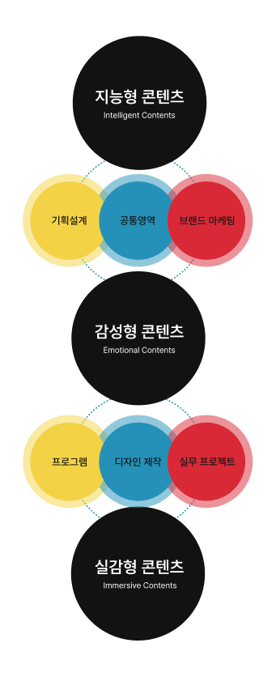

01
실무 중심 콘텐츠 전문가 교육과정
직무 전공별 특화 실무 교육 진행
국가직무능력표준기반 교육 커리큘럼 운영
스마트콘텐츠, 영상미디어, 게임 등 진로디자인모듈 운영
실무 중심 교수진 및 교과·비교과 프로그램 구성
수많은 정보와 가능성 속에서 우리는 각자의 질문을 발견하고,
자신만의 방향을 조준해 왔습니다.
이번 졸업전시 (과녁)은 학생들이 쌓아온 고민과 과정,
그리고 각기 다른 가능성이 하나의 결과물로 세상을
향하는 순간을 담습니다.
2026 서원대학교 미디어콘텐츠학부 졸업전시회
2026 SWU MEDIA CONTENTS EXHIBITION
SEOWON UNIVERSITY, 2026
미디어콘텐츠학부는 기획·디자인·영상·디지털 기술을 넘나들며
자신만의 시선과 가능성을 발견하는 곳입니다.
학생들은 다양한 경험과 프로젝트를 통해 질문을 찾고,
방향을 조준하며, 아이디어를 자신만의 콘텐츠로 완성해 나갑니다.
미디어환경에 유기적으로 대응할 수 있는 첨단실용학문으로
실무에서 요구하는
‘멀티형 인재’로 성장하기 위한
지능형·감성형·실감형 3단계 융합미디어교육과정을 통해
스마트미디어콘텐츠전문가를 양성합니다.

직무 전공별 특화 실무 교육 진행
국가직무능력표준기반 교육 커리큘럼 운영
스마트콘텐츠, 영상미디어, 게임 등 진로디자인모듈 운영
실무 중심 교수진 및 교과·비교과 프로그램 구성
첨단융합스튜디오 운영 및 활성화
실무 프로젝트 및 취·창업 동아리와 산학협력 연계
창업캡스톤디자인 과목 연계를 통한 산학연 프로젝트 진행
공모전, 경진대회 등 현업 실무자 지도 및 컨설팅 진행
스마트디바이스를 활용한 스마트콘텐츠 제작 및 구현
[New Media Contents Zone] 영상미디어콘텐츠 제작
[XR Contents Zone] 3D, 게임, VR·AR, 홀로그램 개발
[Co-working Space] 콘텐츠 아이디어·아이템 개발 구현
새로운 과녁을 향해 나아가는 학생들을 응원하는 미디어콘텐츠학부 교수진을 소개합니다.